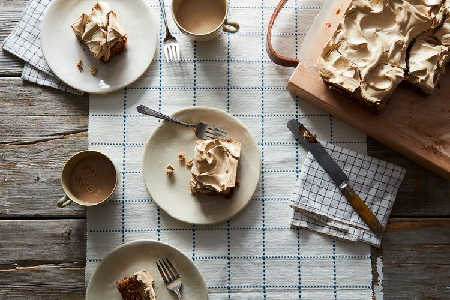

An Old-Fashioned Apple Spice Cake
by BETTEIRENE | September 27, 2009
The Recipe
AUTHOR NOTES
Jump to recipeI asked for this recipe about 45 years ago from one of my mother's friends when we lived on an Air Force Base in Okinawa. I had just begun to bake and the recipe is so easy that it was a success on my first try. With a few tweaks, I've been baking it ever since. Try to use a nice, flavorful apple like Granny Smith, Jonathan, MacIntosh, Rome or Paula Red.
— betteirene
Here's to the crazy ones. The misfits. The rebels. The troublemakers. The round pegs in the square holes. The ones who see things differently. They're not fond of rules. And they have no respect for the status quo. You can quote them, disagree with them, glorify or vilify them. About the only thing you can't do is ignore them. Because they change things. They push the human race forward. And while some may see them as the crazy ones, we see genius. Because the people who are crazy enough to think they can change the world, are the ones who do.
TEST KITCHEN NOTES
Betteirene's recipe is like a cake with a snowcap. The bottom half is reminiscent of carrot cake, textured with grated apples, raisins and chopped nuts. The cake batter is dense and on top of it you spread a thick layer of brown sugar meringue. As you assemble it, you’ll be convinced of its imminent doom. Fear not! In the oven, the meringue toasts and the cake, protected by its meringue roof, retains its moisture, and the best part is the pudding-like layer that forms between them. The meringue needs to be beaten over a water bath, and we learned the hard way that you need hand-held beaters to do this -- whisking it by hand for 10 minutes over a pan of hot water is like running a marathon in heels. Also, we think that light brown sugar is the way to go for both the meringue and the cake.- A&M —The Editors
-
PREP TIME
30 Minutes -
COOK TIME
1 Hour 30 Minutes -
SERVES
6
Ingredients
For the Meringue:
- 2 large egg whites
- 1 1/2 cups firmly packed brown sugar
- 2 tablespoons water
For the Cake:
- 1/2 cup unsalted butter at room temperature
- 1 cup firmly packed brown sugar
- 2 large egg yolks
- 1 teaspoon baking soda
- 1/2 teaspoon salt
- 1 teaspoon cinnamon
- 1/2 teaspoon ground ginger
- 1/4 teaspoon ground cloves (optional)
- 2 large, meaty apples, cored and grated on the large holes of a box grater
- 1/2 cup toasted chopped walnuts (optional)
- 1/2 cup raisins (optional)
- 2 cups spooned and leveled all-purpose flour
Directions
- Position a rack in the middle level of oven. Heat oven to 350 degrees. Grease a 9"x9" baking pan or casserole dish.
- To make the meringue, place the egg whites, brown sugar and water in the top of a double boiler. Put enough water in the bottom of the double boiler to touch the bottom of the top pot. Over high heat, beat the egg whites with an electric mixer until peaks form, 3-5 minutes. Set aside.
- For the cake, beat together butter and brown sugar until fluffy; add egg yolks and blend well. By hand, stir in baking soda, salt, cinnamon, ginger, cloves, grated apples, walnuts and raisins. Fold in the flour, blending well but being careful to not overmix.
- Spoon batter into the prepared pan and smooth the top. Spread meringue evenly over the batter. Bake until top is crisp, about 45 minutes. If you serve it while warm, the meringue will crack when you cut it, but that's a good thing. If you want nice, neat uniform slices, serve the cake the next day.